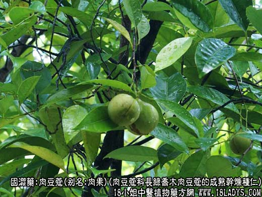
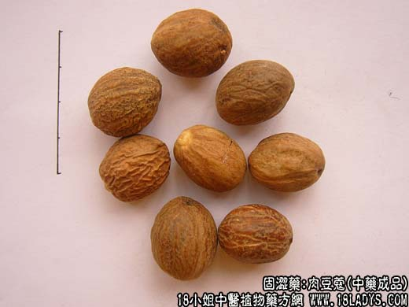
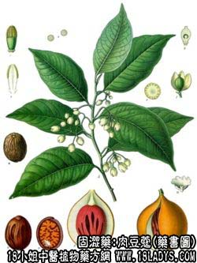

别名：肉果、玉果、肉豆叩。
来源：为肉豆蔻科长绿乔木肉豆蔻的成熟干燥种仁。系进口品。
产地：主产于印尼、马拉西亚、斯里兰卡、印度等地。
性状鉴别：呈球形、卵圆形或椭圆形，长2~3.5厘米，横径2厘米左右，表面多附有一层石灰粉或滑石粉白衣。原品表面灰褐色或淡褐色，显粗糙，满布网脉状沟纹。一端有稍凸起的肿脐，另一端有微凹入的合点。两点之间有一条脊沟。质坚硬，不易碎，破开后断面有淡棕色与棕色交错的斑纹，形成大理石样纹理。富油性，气香烈，味香凉而微苦辛，久嚼则溶化。以个大，坚实，体圆滑者为佳。
主要成分：含挥发油2%~9%（主要为右旋茨烯和、脂肪（肉豆蔻酸70%~80%）、又含肉豆蔻醚。
药理作用：固涩、温中，其作用为收敛、止泻、健脾排气。
炮制：煨去油或用滑石粉炒黄。
性味：辛、温。
归经：入脾、胃、大肠经。
功能：温中下气，涩肠止泻。
主治：长尾虚寒气滞，虚泻冷痢，脘腹冷痛，呕吐，以及肠滑不固，积食不化等症。
临床应用：1、用于虚汗、冷痢，如慢性结肠炎、小肠营养不良、肠结核等。偏于肾阳虚弱者，配补骨脂、五味子等，方入四神丸；偏于脾阳虚弱者，配党参、白术、茯苓、大枣；脾肾俱虚者用养脏汤，此方治脱肛亦好。
2、用于健胃，对有脾胃虚寒、食欲不振、鼓肠、腹胀、肠鸣腹痛者较适宜，又能止呕，治小儿伤食吐乳和消化不良。配香附、神曲、麦芽、砂仁、陈皮等。
使用注意：急性胃肠炎之实热暴泻火肠有郁热者不宜用。
用量：1.5~4.5g。
处方举例：养脏汤（《局方》）：煨肉豆蔻、罂粟壳（蜜炙）、煨诃子肉各4.5g，白芍、白术、当归各15g ，党参、炙甘草各7.5g，肉桂、木香各3g，研为细末，每服6g，加生姜2片、大枣1枚，水煎服。
注：1、过去商品中有一种带有种皮的玉果，称“长壳玉果”。长椭圆形，长4~5厘米，中部直径2.5厘米左右，两端略细而钝圆，种皮硬脆，褐色，内种仁椭圆形，棕色，香气弱，辛辣。质次。主产于印尼的西伊里安。
2、玉果花为肉豆蔻种仁外的假种皮。长4厘米左右，厚约1毫米，下部连合，上部裂成数瓣，橙红色，入腊制花朵故习称玉果花。商品多已压扁，易破碎，气芳香，有驱风、兴奋等功效。